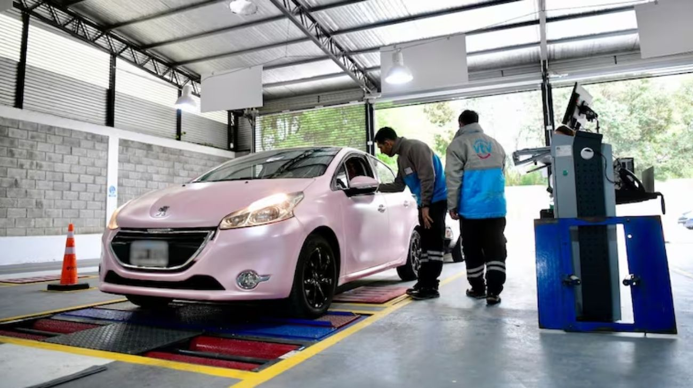

El Gobierno reformó la VTV: menos revisiones y más competencia
A través del Decreto 139/2026 publicado en el Boletín Oficial, el Gobierno nacional introdujo cambios significativos en el sistema de Verificación Técnica Vehicular (VTV).

El Gobierno nacional dio otro paso en su agenda desreguladora y esta vez el turno fue para la VTV, la Verificación Técnica Vehicular obligatoria que deben realizar los propietarios de automóviles en todo el país. Mediante el Decreto 139/2026, publicado en el Boletín Oficial, se introdujeron cambios concretos que modifican tanto los plazos de revisión como el esquema de competencia entre los prestadores del servicio. La medida es parte de la estrategia más amplia del Ejecutivo de reducir cargas y trámites sobre los ciudadanos y las empresas, en línea con las más de 14.500 desregulaciones que el propio presidente Milei mencionó en su discurso de apertura de sesiones ordinarias.
Los cambios más relevantes tienen que ver con los plazos. Hasta ahora, los autos 0 km debían realizarse su primera VTV a los 3 años del patentamiento. Con la nueva normativa, ese plazo se extiende a 5 años, lo que significa que los propietarios de vehículos nuevos tendrán dos años más antes de tener que afrontar ese gasto y ese trámite. Para los autos de hasta 10 años de antigüedad, la revisión pasará de ser anual a ser cada dos años, otro alivio concreto para millones de conductores que hoy deben renovar la VTV todos los años. En términos simples: menos trámites, menos tiempo y menos dinero gastado en revisiones para la gran mayoría de los automovilistas del país.
El otro gran cambio es la apertura del mercado. Hasta ahora, las revisiones técnicas estaban reservadas casi exclusivamente a los centros de inspección habilitados, que en muchos distritos operaban con tarifas reguladas y sin competencia real. Con el nuevo decreto, concesionarias, importadores y talleres mecánicos también podrán realizar las verificaciones, lo que rompe con ese esquema monopólico. Además, se elimina la posibilidad de que las autoridades provinciales fijen precios máximos o mínimos, ni limiten la cantidad de talleres habilitados. La lógica detrás de esta medida es que más competencia entre prestadores debería traducirse, con el tiempo, en mejores precios y mejor servicio para el usuario.
Sin embargo, hay un punto clave que los conductores deben tener en cuenta: el decreto no entra en vigencia de manera automática en todo el territorio nacional. Dado que la VTV es una competencia que en Argentina se ejerce a nivel provincial, cada provincia deberá adherir formalmente a esta reforma para que los cambios sean aplicables dentro de su jurisdicción. Esto significa que el ritmo de implementación será diferente según el distrito, y que en algunas provincias los nuevos plazos y la apertura del mercado podrían demorar más en hacerse efectivos. Los conductores deberán estar atentos a lo que resuelva su provincia en las próximas semanas.